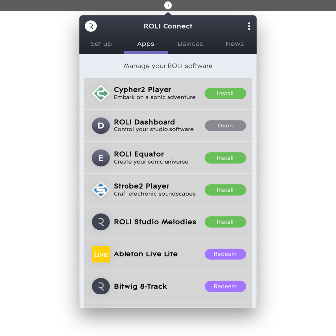
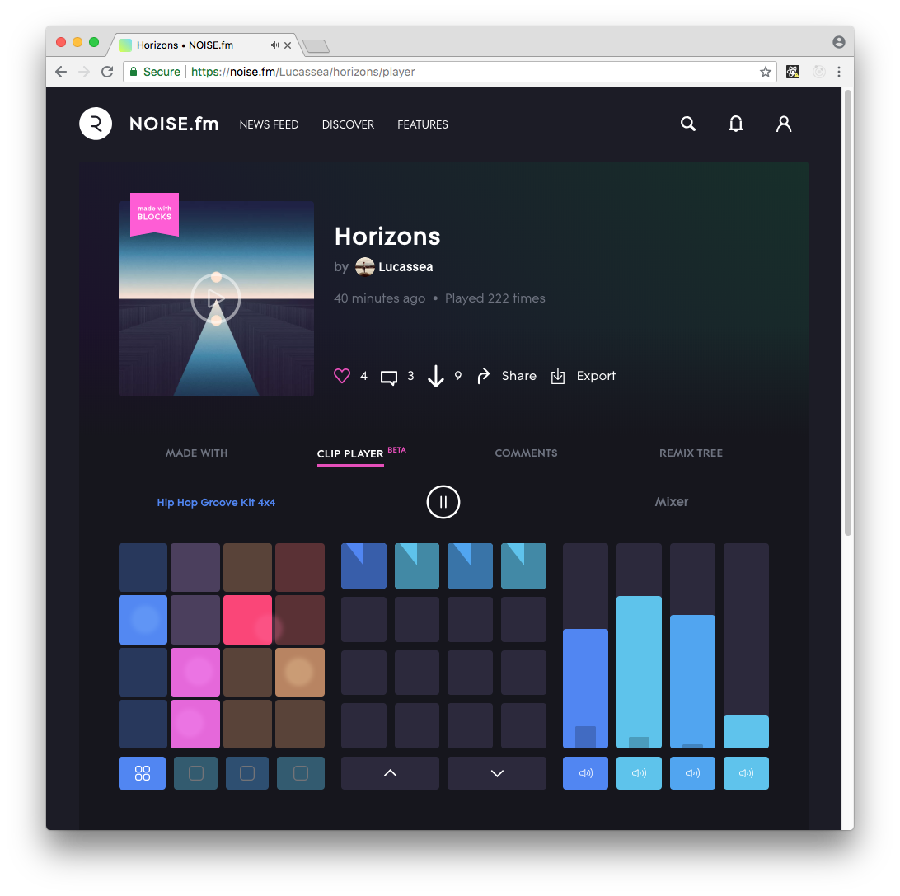
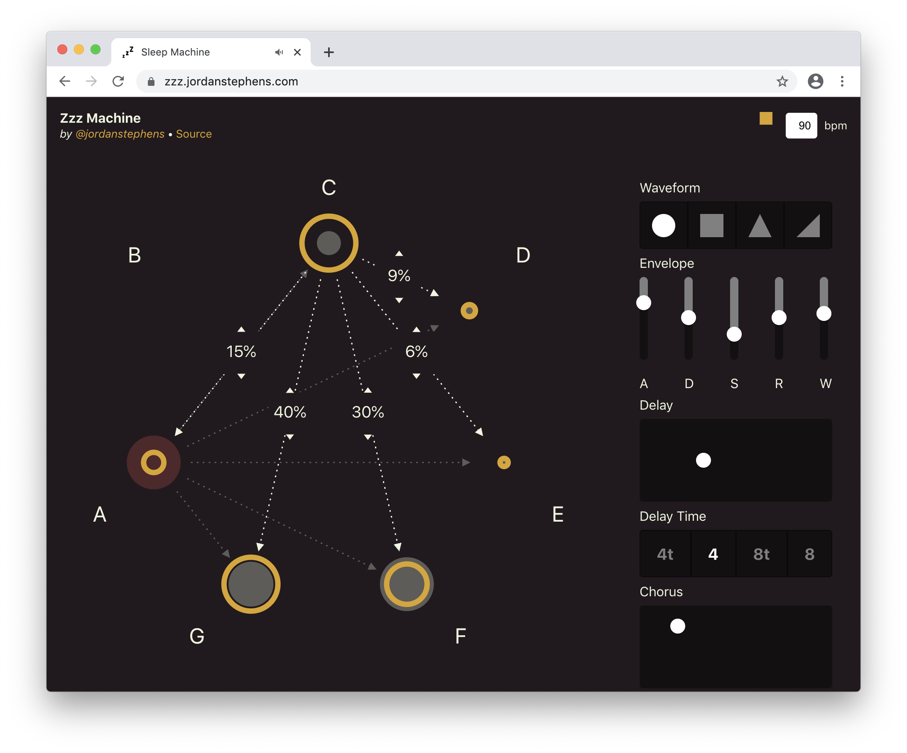
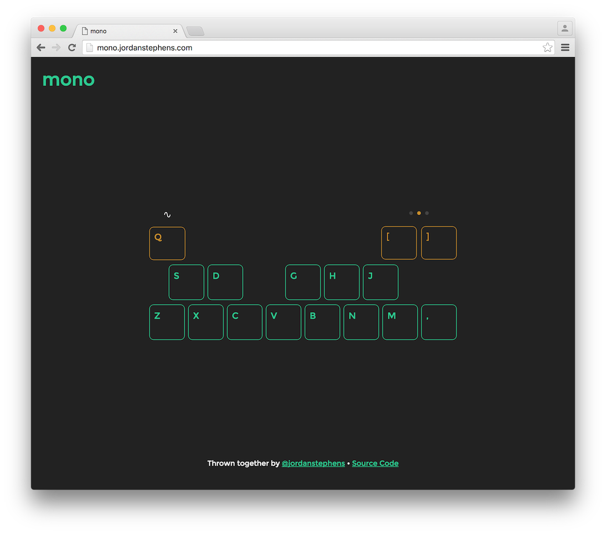
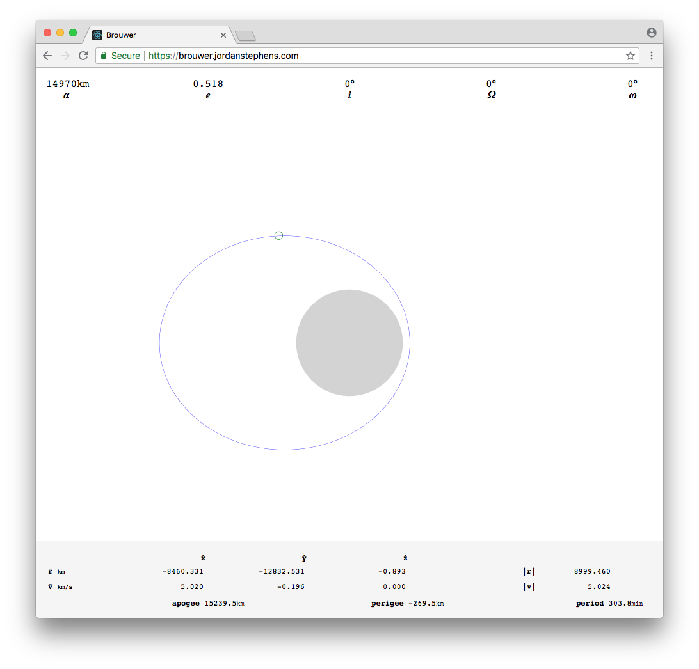
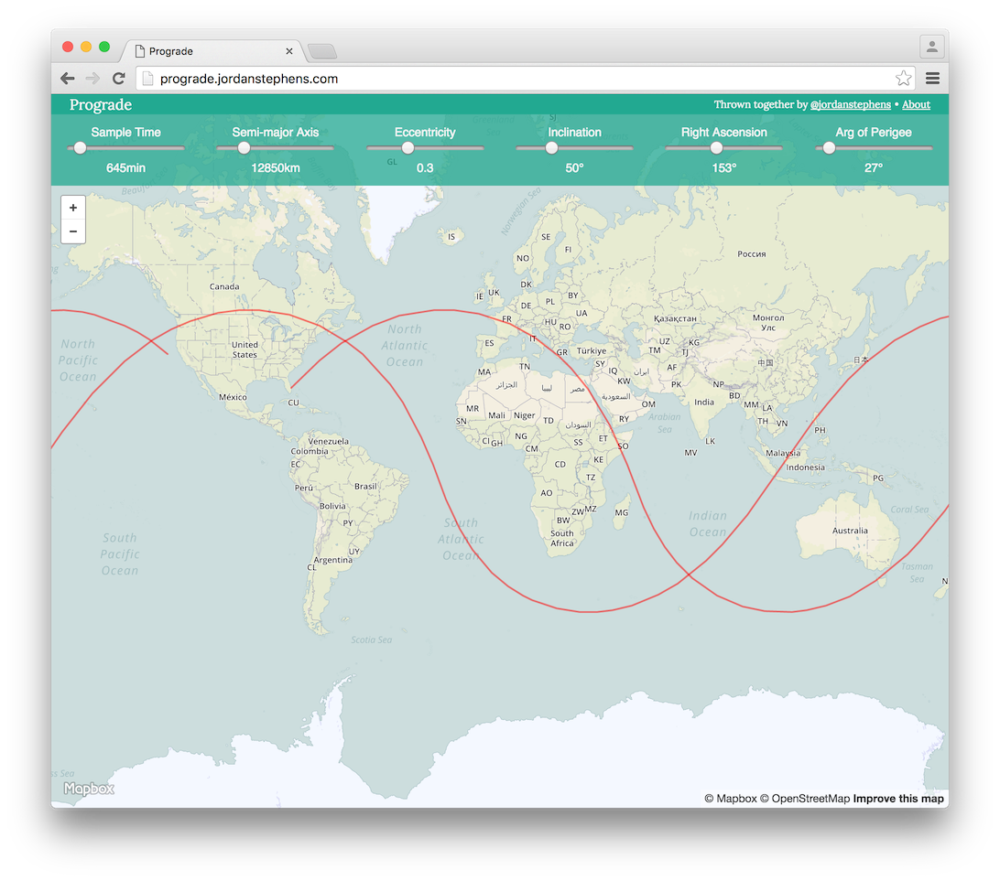
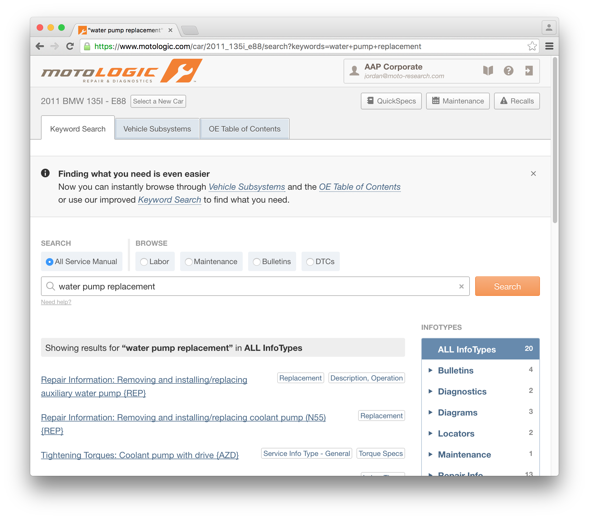

Hello
I'm a computer programmer, intermittent musician, and pretend photographer trying to split my time between creative arts and engineering. I'm interested in music, computers, design, and spaceflight. Right now, I'm living in Austin, Tx, and I'm working with Artemis.
Projects
-
ROLI Connect live
ROLI Connect brings ROLI to your desktop, helping you manage your ROLI Software, and making it easy to configure your BLOCKS for your DAW.
 -
NOISE.fm live
A social network built around the ROLI NOISE app with an interactive player built on top of the Web Audio API.
 -
Sleep Machine live, source
A generative arpeggiator music box using an interactive first-order markov chain.
 -
Mono live, source
A monophonic synthesizer in your web browser that you can play with your computer keyboard. It is built on top of the Web Audio API, and was created as an exercise in using Clojurescript.
 -
Brouwer live, source
A tool to vizualize the orbital paths of a satellite with any arbitrary orbital parameters.
 -
Prograde live, source
A tool to vizualize the ground paths of satellite orbits over earth with any arbitrary orbital parameters. Instead of being confined to the path of a known satellite, you can freely modify the orbital parameters to gain intuition about how each parameter affects an orbit's ground path.
 -
MotoLogic overview, demo
A tool used by automotive technicians to help them diagnose and repair vehicle issues by providing them with any manufacturer or after-market technical data that they might need.

More
More projects and source code can be found on Github. I also post photos on vsco, and say nonsense on twitter.